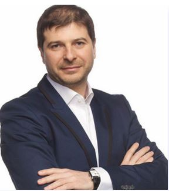
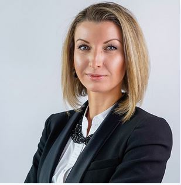
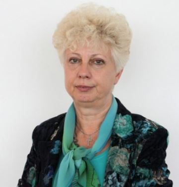
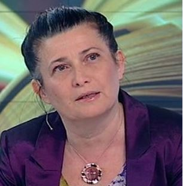

Представяме Ви нашия екип от лектори, консултанти и ментори, с които ще работите в магистърската програма "Дигитален маркетинг и уеб дизайн". По време на цялото обучение, студентите от магистърската програма ще работят както с лекторите, така и с консултантите и менторите, ангажирани в учебния процес.
• Менторите са експерти от практиката, които подпомагат на студентите по време на техните стажове и практики.
• Консултантите са експерти от практиката, чиято роля е да дават насоки относно съдържанието и учебния материал.
• Лекторите са експерти с дългогодишен практически опит от ВСУ "Черноризец Храбър" и от компании от ИТ индустрията, които пряко участват в учебния процес като преподаватели




Пламен Русев
Пламен Русев е председател на борда на WEBIT и Доктор хонорис кауза на ВСУ
Евгени Андрее е хонорован асистент във Варненски свободен университет
Научни интереси: Компютърни архитектури, Операционни системи, Уеб технологии
Роля в магистърската програма:
Лектор
Дисциплини:
• PHP;
• MySQ
За нас
ВСУ "Черноризец Храбър" се утвърждава като университет със съвременен мениджмънт и с перспективна програма за професионално развитие на студенти. Това го откроява като образователен бранд, спечелил доверието, не само на своите възпитаници, но и на академичните партньори от целия свят.